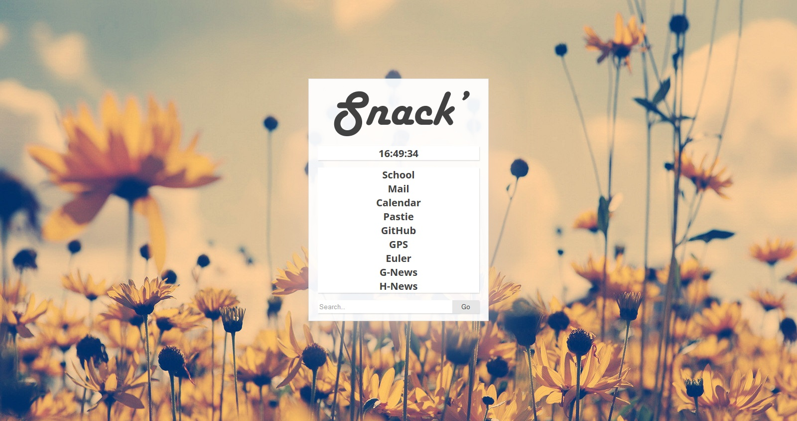

Projects
Startpage
{kind=link}
Custom startpage, preferably used in firefox, not fully tested in other browsers.
Preview | Repository
UserChrome
{kind=link}
Custom userChrome.css, only used in firefox and shouldn't require anything.
Still very buggy, so I'm still working on it daily.
Note; It's transparent so it takes your default window color (which is why it's grey for me).
Repository
Colors

Colors script, written in Ruby, supports table, list and custom colors.
Repository
Pastie

Pastie script, posts files to pastie.org
Repository
Fighters
{kind=link}
Ruby script, some weird fencers move from side to side while fighting and shouting insults at each other.
Supports colors, speed, movement, and timer options.
Repository
Scribbles
I tend to write a lot of crap in Ruby, I keep them in a repository for myself or anyone that cares.
Current list of items;
- euler
- feels
- calc.rb
- life.rb
- maze.rb
- poker.rb
- rename.rb
- rock_paper_etc.rb
- testing.rb
- tick_tack_tow.rb
Repository
Ircbot
Ircbot, written in java. It has extensive features and tries to be a backup for others.
Functions config snippet
Databasemanager snippet
bbLean

Light bbLean theme, based on bb_crim by apathyrecharge.
Basically inverted his colors and removed the red.
Repository
Console2

Console2 settings file, light colors and default paths set.
Best used with an autorun.cmd and simple cmd.exe